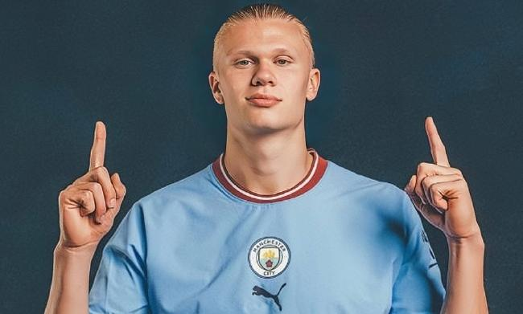

Manchester City Football Team
Manchester City Football Team
|
|||||
| 宿舍首页 | 首页 | 队员 | 历史 | 荣誉奖项 | 青训成果 |
|
|||||
|---|---|---|---|---|---|
曼城阵中从不缺乏优秀的队员，以下是当前主力队员的简介 |
|
| 埃林-哈兰德（Erling Haaland）司职前锋 | |
|
 |
| 凯文-德布劳内（Kevin De Bruyne）司职中场 | |
| 德布劳内能给整个曼城球队带来一些特殊的改变，德布劳内的身体、球技、意识以及技术特点，对于曼城是一个巨大的补充。速度快、爆发力好，拥有不错的盘带技能，传球不拖泥带水时机拿捏恰到好处，能左右开弓大大增加了射门时的威胁性，总的来看他具备了一名攻击手所要具备的主要素质。德布劳内的踢法具有很强的攻击性，所呈现出来的是有吸引力的足球。 | |
| 杰克-格拉利什（Jack Grealish）司职左边锋 | |
格拉利什在进攻时是个充满「巧」劲的选手，能传能盘，在控制球时能製造许多不同的选择，防守非常难预测，球黏脚，脚步跟上很快，也拥有顶级的速度，在盘球时重心转移非常快，他时常可以接应队友的传球，然后以一个脚跟或是弹射形成人球分过，对方后卫如果是前进要防守他，时常会被过掉然后一路被推到底线。 而格拉利什也具备相当明快的得分区处理球能力，其射门是相当精准，可以在18码线打地面球穿过禁区的混战破门，门前抢点的轻轻推射也极有突袭性，他更会使用在门前假射真传或故意漏球给远门柱队友的手段，来製造出得分射门，可以说他对队友的位置掌握也相当不错。 |
|
|